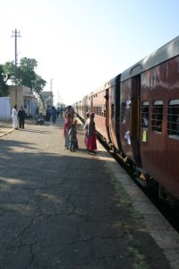

Le 15 décembre 2004,
Le reveil a sonne tard. Il est 6h30 et le taxi qui doit emmener de Pushkar a la gare ferroviere d’Ajmer est dela la et tambourine a la porte de l’hotel. Nous finissons nos sacs rapidement et nous engouffrons dans la voiture. Nous assistons au lever du soleil sur la valle de Pushkar en silence. La dame de l’hotel nous a dit que le train partait a 7h40. Nous verifions sur le billet, il est inscrit : "heure prevue : 7h50". Heure prevue, bizarre...
Nous arrivons a la gare. Un arbre croule litteralement sous une multitude de perroquets qui nous accueillent en piaillant vivement. Sur le panneau d’affichage notre train part a 7h35, d’ou la mention "heure prevue" sur le ticket. Nous nous dirigeons vers la voir 4 en empruntant la passerelle qui enjambe tous les trains. Des autochtones plus presses que nous traversent les voies a pieds... Par ailleurs, une famille de porcs cherche de quoi manger sur une autre voie (vous connaissez l’histoire "et paf le chien" ?).
 Le train arrive. Nous avons de la chance : cette fois ci, les numeros de voiture sont indiques. Nous verifions nos noms et nos places sur un listing accroche a meme la portiere. Nous montons. Le train a passe la nuit sur le trajet Delhi - Ajmer et quelques banquettes sont encore en position couchettes. Notre compartiment est occupe par quatre militaires qui ont etale leur sac sur tous les sieges. Ils n’ont pas l’air reveilles et il faut s’y reprendre a deux fois afin qu’ils nous fassent un peu de place. Une fois installe, je ressors pour acheter le journal (j’ai enfin decide de me tenir informe). Je ne trouve qu’un journal en hindi. L’edition en anglais ne sort qu’en anglais ne sort qu’a 11 heures.
A 7h55, tres ponctuel, le train part enfin pour 8 heures de voyage. Non, au bout de 10 minutes, il s’arrete au milieu de nul part. Des gens sortent sur la voie. Un voyageur en profite pour changer de wagon (ceux-ci ne communiquent pas entre eux). Un jeune garcon entre et a quatre pattes, decide de faire le menage avec un balais improvise de brins de paille lies entre eux. Il souleve une poussiere incroyable. Puis il fait la manche pour se faire retribuer de son travail improvise.
Le train repart enfin. Le carreau de la fenetre qui nous fait face est brise. Frigorifiee, Eve-Laure s’emmitoufle dans mon duvet. Une famille composee de femmes en majorite prend la place des militaires. Un jeune homme avec son echarpe enroulee autour de la tete nous rejoint. Au bout d’un moment, il sort un paquet de cigarettes et m’en propose une. Je refuse. Il ne fume pas non plus, du coup. Un vieil homme assis en face d’Eve-Laure me demande si je fume. En repondant par la negative, il me demande si je bois. Je reponds de la biere, de temps en temps. Il me dit qu’il ne fume ni ne boit, il chique, comme beaucoup d’Indiens, un melange qui rend les dents rouges.
Le trajet etant plutot long, je monte sur la couchette superieure pour faire une sieste. Soudain, on me reveille en me secouant. Un indien d’une bonne trentaine d’annees avec une moustache bien fournie, me demande de descendre pour venir discuter avec lui. Je lui fais comprendre que je suis fatigue et que je souhaite me reposer. Pas moyen ! Il revient a la charge toutes les vingt minutes. La notion d’intimite semble tres relative en Inde !
Nous arrivons, un peu las, vers 18 heures, c’est a dire 10 heures de train pour seulement 304 km... Nous avons battu le record... Pour notre plus grand plaisir, un rickshaw nous attend a la gare avec un panneau orne de mon prenom ! Nous decouvrons un hotel tout a fait charmant, retire de la rue par un jardin sympathique et offrant une vue impressionnante sur le City Palace.
Michaël
{kind=link}